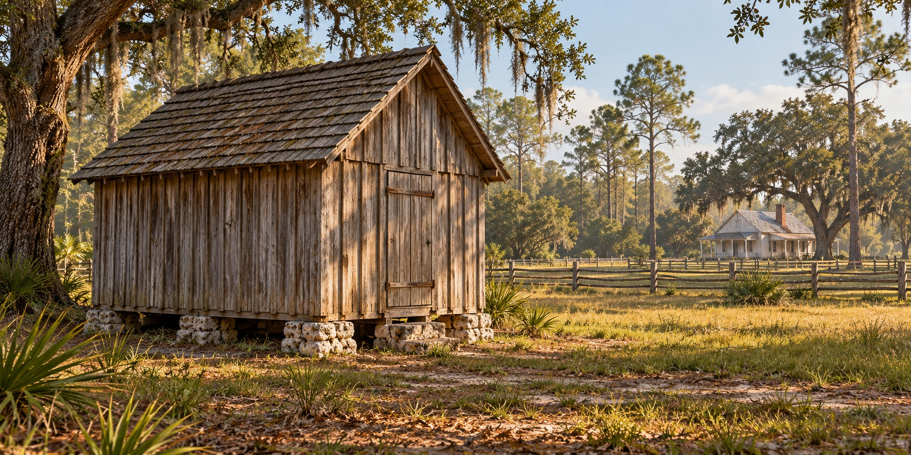

Smokehouses
The Building and Its Place on a Florida Homestead

A smokehouse was a working building in a farm household’s system of food storage and preservation. Its modest exterior could make it easy to overlook beside a house or barn. The walls, roof, supports and fittings show why it belonged in the farmyard.
A Building with a Particular Job
Before household refrigeration became common, families managed provisions through several methods. Salted and smoked foods were part of that work. Florida temperatures varied by region and season, and a winter warm spell could affect perishable food. The smokehouse’s value did not mean that preservation was automatic or without risk.
This article examines the building and its location on a homestead. FLH-0056, The Florida Smokehouse, follows the food, work and household traditions associated with it. Keeping those subjects distinct allows the two articles to complement each other.
The Documented Dudley Farm Example
The Historic American Buildings Survey dates Dudley Farm’s smokehouse near Newberry to about 1882. It describes a twelve-by-fourteen-foot, single-story wood-frame building with board-and-batten siding on dry-laid limerock. Those are details of a recorded structure, rather than a standard size assigned to every Florida smokehouse.
The survey also records a packed-earth floor and fittings for suspending meat. Materials and arrangements differed between farms. A surviving example can explain how work was organized without proving that all smokehouses had the same floor, roof pitch or dimensions.
A Separate Place in the Farmyard
A smokehouse stood apart from the residence. Separation could reduce the chance of a fire spreading directly between buildings, but spacing depended on the site. No documented universal thirty-foot minimum or fifty-foot preference has been established for the Florida buildings discussed here.
The enclosure sheltered provisions from weather and intrusion and helped manage a space used for smoke and storage. It did not have to be airtight. A gap in a wall cannot by itself tell us whether food was preserved successfully or safely.
Materials and Maintenance
Roofing and walls required care, and repairs could change the appearance of a building. At a preserved site, the date of the smokehouse and the date of a replacement roof may differ. That history matters when an illustration or description presents the building at a particular time.
Dudley Farm’s survey records the use of hickory coals. It supports that local example without establishing a universal list of smoking woods. The earlier article’s palmetto-root and citrus-wood claims are omitted because supporting records were not established.
Understanding the Work without Giving a Recipe
Salt curing and smoking help explain the smokehouse’s purpose. They should not become informal instructions with specified curing times or promises that meat would keep for months or a year. Historical households could lose food, and the appearance of a smoked product did not prove it was safe.
Cold smoking exposes food to smoke without reliably cooking it. Salt and smoke alone do not establish food safety. This is historical description, not a method to follow; present-day preparation requires validated procedures and current USDA or university-extension guidance, including temperature control and appropriate storage.
What a Surviving Smokehouse Shows
Dudley Farm Historic State Park preserves a farmstead that includes the documented smokehouse. Its place among other buildings helps explain how a household divided labor and storage. Read alongside measured records, the small structure becomes evidence of how a farm worked.
That evidence is stronger than a generic claim that every family had the same building or survived by the same method. The smokehouse’s story can be told through documented construction, local practice and attributed memories while recognizing the differences among Florida farms.
Quick Facts
| Focus | Smokehouse construction and farmyard location |
|---|---|
| Documented example | Dudley Farm, about 1882 |
| Recorded size | 12 by 14 feet, specific to Dudley Farm |
| Walls | Wood frame and board-and-batten siding at Dudley Farm |
| Floor | Packed earth in the documented example |
| Location | A separate outbuilding; no universal minimum spacing asserted |
| Related article | FLH-0056 covers food, labor and family traditions |
| Food safety | Historical description, not curing instructions |
Discussion Questions
1. What does a documented smokehouse tell us about a working farm?
2. Why is a historical description different from a food-safety procedure?
Related Articles
FLH-0048 — Why Cabins Were Built Off the Ground
FLH-0050 — Building a Homestead
FLH-0051 — Building with What the Land Provided
FLH-0056 — The Florida Smokehouse
Sources
Historic American Buildings Survey. Dudley Farm, HABS FL-565, historical report, printed page 9, PDF page 12. Library of Congress. Source record
Florida State Parks. Dudley Farm Historic State Park. Source record
USDA Food Safety and Inspection Service. Smoking Meat and Poultry. Modern food-safety guidance, not evidence of pioneer methods. Source record